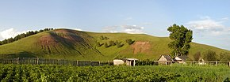

Лениного́рский райо́н (тат. Лениногорск районы) —
административно-территориальная единица и
муниципальное образование (муниципальный район)
в составе Республики Татарстан Российской
Федерации. Находится на юго-востоке республики,
в верхнем течении реки Степной Зай.
Административный центр — город Лениногорск.
Население
Согласно итогам Всероссийской переписи
населения 2020 года, население района
составляют татары — 53,5 %,
русские — 38,6 %, чуваши — 3,1 %,
мордва — 2,8 %. В городских условиях
(город Лениногорск) проживают 76,71 %
населения района. На 2018 год уровень
рождаемости на 1 тысячу человек
составляла 10 %, смертности — 14,8 %.
В 2019-м оба показателя уменьшились:
по последним подсчётам, уровень
рождаемости составил 8,9 % на 1000
человек, а уровень смертности снизился
до 13 %. Таким образом, естественная
убыль населения в районе составляет 4,1 %.